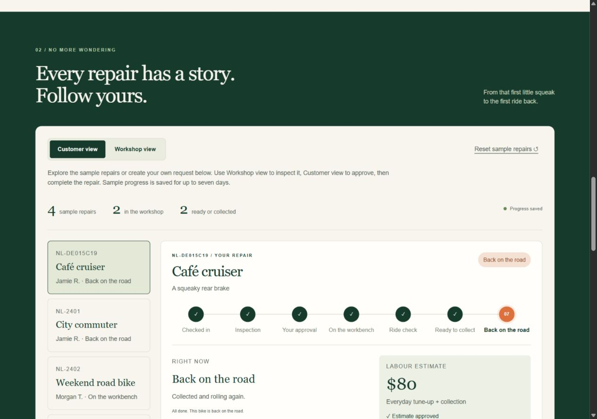
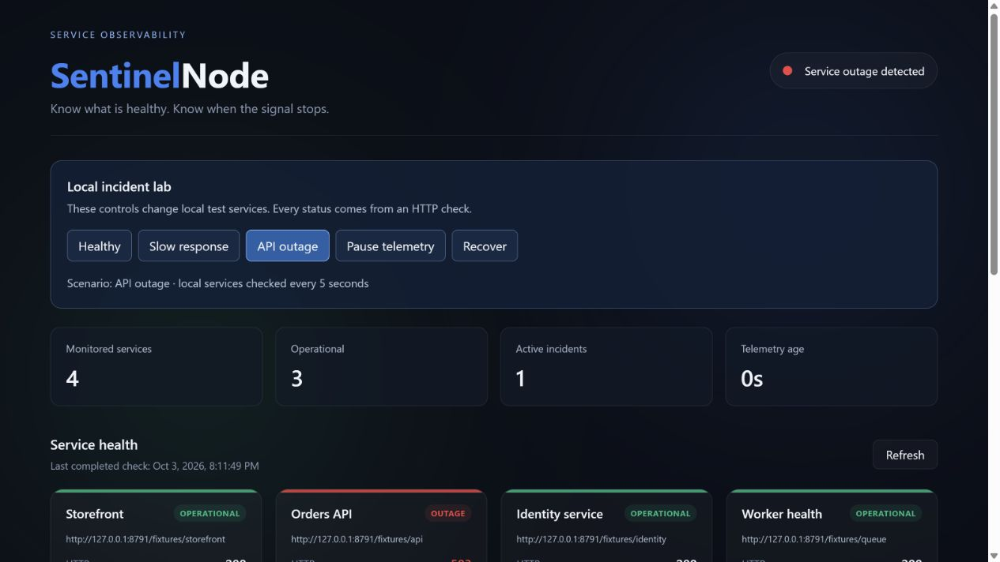
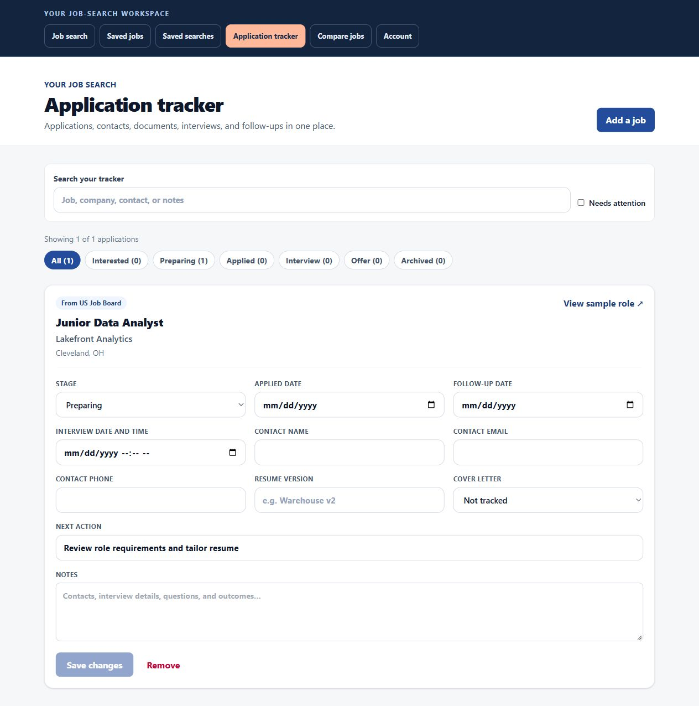

Selected work / A guided look
See what I built.
Follow it through.
Pick the kind of problem you need help with. Each walkthrough explains my contribution, a decision behind the work and what to look for in the example. These are self-directed projects.
01 / Northline · Live visitor demo
An approved estimate should mean
the work the customer agreed to.
My contribution. I built the public customer website, staff workflow, persistent API and separate demo. The application connects intake, itemized estimates, customer decisions, parts, scheduling and repair history.
A decision I made. Approval belongs to an estimate version. Changing the price or work requires a fresh decision; an old approval cannot authorize a different repair.
Why it matters. Staff can revise findings without losing the agreement or confusing the customer about the amount they approved.


Open a sample repair.
The demo link opens City commuter (NL-2401). In a fresh workspace it is waiting for approval. Read the current estimate and repair journal.
Compare the customer and staff views.
Choose Customer view to inspect what the rider sees. In the staff view, find Revise the estimate and Estimate history. Follow the version and decision status through a change.
Look at the next operational step.
Review Schedule & assignment, then Parts & stock. Work dates and stock are separate decisions from customer approval. Reload to check that your saved changes remain.
Fictional workshop and sample customers. Demo changes stay in your visitor workspace. If you have used it before, the sample may already be at a later stage. The private staff workspace is separate.
02 / SentinelNode · Recorded browser replay + runnable app
A missing monitoring signal
is a different problem from a failed service.
My contribution. I built a Python and SQLite application for service checks, incident investigation, notes and notification retries, with saved history and backup/restore tools.
A decision I made. An old healthy observation must not keep presenting a service as healthy. The interface marks stale observations as unknown and keeps the last incident context.
Why it matters. Someone investigating a failure can tell whether the service failed, the monitoring signal stopped or an alert failed to arrive.


Start with the outage.
Open the replay at the recorded outage. Notice the service failure and active incident.
Replay lost signal.
Choose Replay lost signal. Health becomes unknown when observations stop being trustworthy. The interface retains what was last observed.
Replay recovery.
Choose Replay recovery. Compare the recovered state with the retained incident history. Notification evidence below the replay shows delivery attempts separately.
No installation is needed for the recording. It does not run live checks or send alerts. The separate single-operator application runs on a computer or server; live AWS operation remains unverified.
03 / Job Discovery · Illustrated case study
Collecting a listing is one job.
Keeping someone's progress is another.
My contribution. I built both the employer-source collection pipeline and the Next.js application for searching, comparing, saving and tracking opportunities, backed by SQLite and private account workspaces.
A decision I made. Commit an imported page and its continuation together. If saving fails, the import must not move past unfinished work. Keep posting dates separate from later observations.
Why it matters. An interrupted refresh can resume without skipping records, and an old vacancy does not become “new” simply because it was checked again.


Follow the job seeker's workflow.
Open the case study's The workflow section. Follow search settings into saved searches and the application tracker screenshots.
Look behind the results.
Read Engineering decisions for duplicate handling, resumable imports, date provenance and geographic eligibility. These affect whether search results are useful.
Check the evidence and limits.
Read the dated verification record. It separates automated checks, browser observations and real imports from operational work that still needs verification.
The application has been operated locally. Public application hosting is pending; the source and member records remain private. The public case study contains selected screenshots and dated findings.
Have a workflow like this?
Tell me what happens today, where it breaks down and what you want to make easier. We can use that to define the first useful piece of work.